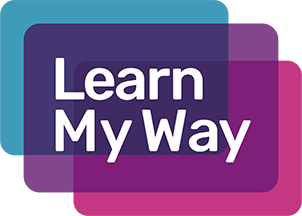

During this activity, you have learnt how to:
- Create different files and folders.
- Move files and folders into different folders.
- Open and close folders using double clicking.
- Use the right-hand button to open a menu.
- Use the minimise, maximise / restore and close icons.
- Snap different applications (apps) to different sides of your screen.
If you are unsure about any part of the activity, you may wish to check out Good Things Foundation's Learn My Way - using a Computer for more information. Click on the image below to be taken their website
